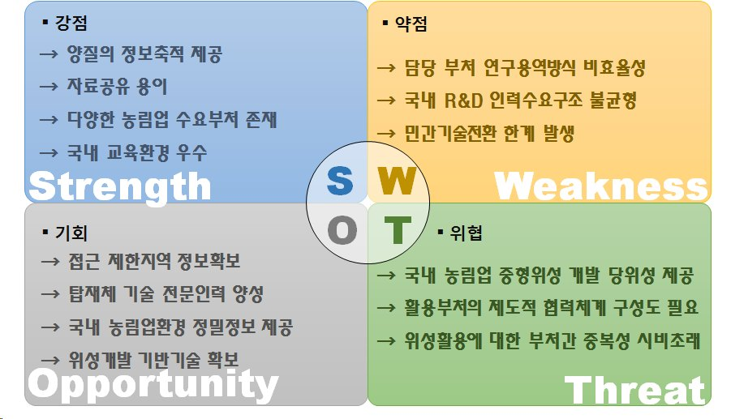

연구실적 · 국내전문학술지
농림업 중형위성 개발정책 수립에 관한 연구
A Study on the Establishment of Agricultural Satellite Development Policy

초록
전 세계적으로 지구관측 위성의 수요가 증가함에 따라 위성영상을 활용한 연구가 다양한 분야에서 진행되고 있다. 국내에서 추진 중인 차세대 중형위성 개발 사업에서는 지상관측, 기상·기후, 환경감시 등 다양한 임무를 수행하기 위해 국내 독자기술로 위성을 개발할 예정이며, 개발된 위성들은 농촌진흥청, 기상청, 환경부, 국토교통부 등에서 공동으로 활용할 계획에 있다. 특히 공공수요 중 국토의 상당 부분을 차지하는 농림업분야에서 중형위성의 활용이 커질 것으로 예상된다. 본 논문에서는 국내 농림업 관련 수요 기관에서 위성영상이 활용될 수 있는 방안을 정립하고, 농림업에 특화된 위성 탑재체를 확보하기 위한 전략을 수립하였다. 차세대 중형위성 기술요소의 경우 활용범위와 가치가 높은 반면 효율성을 고려하여 국내에서 독자적으로 개발될 예정이다. 본 논문에서 다루는 농림업 중형위성 개발 정책수립은 향후 국내 차세대 중형위성 개발 사업 계획 수립 및 농림업 위성관측 체계 구축에 참고자료로 활용될 것으로 기대된다.
사이트 원문 표기
김현철 (Hyeon-Cheol Kim), 김아름 (Ah-Leum Kim), 김범승 (Bum-Seung Kim), 홍석영 (Suk-Young Hong), 이우경 (Woo-Kyung Lee), “농림업 중형위성 개발정책 수립에 관한 연구”, 한국위성정보통신학회논문지, 제10권 4호, 2015년